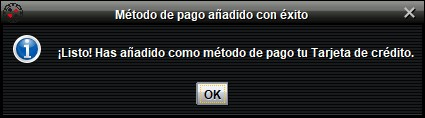

Pantalla Principal
Tras iniciar sesión o registrarse, el cliente encontrará la siguiente pantalla:
La imagen muestra el panel principal del juego. A través de este, el usuario puede acceder
a los diferentes submenús de la aplicación. A continuación se ilustra cada uno de sus componentes:
Saldo Disponible y Métodos de Pago
En esta zona, ubicada en la esquina inferior izquierda de la pantalla, se muestra al usuario
cuál es su saldo actual (en euros), además de brindar la posibilidad de vincular un método de pago.
Vincular Tarjeta
Inicialmente, el método de pago por defecto que se ofrece al usuario es la tarjeta de crédito;
para vincularla, es necesario que el cliente introduzca el número de tarjeta y código de seguridad correspondientes en los campos indicados.
Además, se ofrece la posibilidad de vincular otros métodos de pago, como PayPal o Paysafecard.
Para acceder a dichos métodos, será necesario pulsar el botón
situado debajo del formulario de introducción de datos para una tarjeta de crédito.
Al pulsar la opción, se mostrarán los respectivos botones para poder vincular cada uno de los métodos:
- PayPal: Requiere la introducción del correo electrónico y contraseña correspondientes
a la cuenta en PayPal del cliente para poder acceder al medio de pago predefinido para dicha cuenta.
- Paysafecard: Bastará con introducir el código de la tarjeta en vigencia para proceder a su vinculación.
Si la información introducida para el método de pago correspondiente es correcta,
se mostrará un aviso informativo confirmando que el medio ha sido vinculado exitosamente.

Exportar Saldo
Una vez añadido un método de pago, el botón correspondiente pasará a ejercer otra función.
Dicha función será la de Exportar Saldo, que permite transferir todo el saldo disponible
del cliente al método de pago vinculado, tras una previa confirmación por parte del usuario.
Acceso a submenús y opciones
En la zona este de la pantalla de juego, el usuario encontrará lo siguiente:
- Comprar Fichas: Permite adquirir fichas para jugar a la ruleta mediante el saldo disponible del cliente.
- Cargar Saldo: útil para añadir saldo a la cuenta de Casino: Ruleta a través del medio de pago vinculado.
- Pedir Consumición: Da acceso a la carta de consumiciones para realizar pedidos de bebidas varias en cualquier momento.
A la derecha de estos botones se encuentra el botón SALIR, a través del cual el usuario podrá cerrar su sesión
en el juego guardando su saldo para la próxima vez. Además, las fichas compradas serán convertidas a saldo del juego.
Al igual que en las pantallas de inicio de sesión y registro, el usuario dispone del botón
situado en la esquina superior derecha, para controlar la reproducción o pausa de música acorde a sus preferencias.
Dicho botón también puede ser accionado mediante la combinación de teclas "Alt" + M.